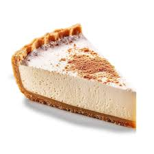

| Imagem | Descrição | Receita |
|---|---|---|
|
Um donut, doughnut, dónute, rosca ou rosquinha é um pequeno bolo em forma de rosca, popular nos Estados Unidos e de origem incerta. Consiste numa massa açucarada frita, que pode ser coberta com diversos tipos de cobertura doce e colorida, como por exemplo chocolate. |
||
|
Bolacha é um bolo chato e seco de farinha de diversas formas e tamanhos. Pode ser consumida de diversas maneiras, doce, com recheios, salgada ou acompanhada de especiarias e/ou patês |
||
|
O brigadeiro é um doce típico da culinária brasileira, de origem paulista, que rapidamente se difundiu pelo resto do país, tornando-se comum em todo o país a sua presença em festas de aniversário. |
||
|  |
Torta de limão é uma torta cozida no forno e recheada com um creme a base de limão. Sua origem é incerta, embora existam alguns relatos que indicam que tem origem no sul dos Estados Unidos ou na França. |